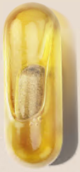

Simplicity is our secret ingredient
When it comes to our formula, we're as proud of what we put in as what we left
out

Omega 3 EPA contributews to normal heart health and the maintenance of normal blood
pressure.
Vitamin C and the full B comnplex support normal psychological function-helping keep
neurotransimitter production balanced.
Folate(B9), iron, and vitamins A, C, D, B6 and B12 support immune function-maintaining your
natural defences.
Vitamin B12 and iron support energy metabolism and regulate tiredness-so you can sleep
longer
and deeper.
Zinc and biotin (B7) maintian hair and skin-keeping them healthy and strong.
Vitamin B5 supports mental performance-so you can concentrate better and feel more clarity.